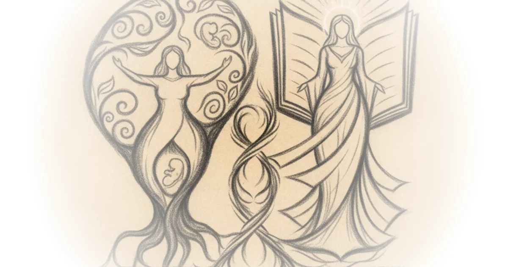

This piece from Wayfare performs a radical act of reclamation: it refuses to let two foundational women in Latter-day Saint history be defined solely by their husbands' failures or the later distortions of church leadership. By placing Eve and Emma Smith side-by-side, the editors argue that their stories are not parallel tragedies but complementary portals linking the Creation to the Restoration, challenging a century of memory that has often reduced them to passive figures.
The Architecture of Helpmeet
The article begins by dismantling the traditional view of the "help meet" as a subordinate. Wayfare reports, "It is not good that the man should be alone," the Gods assert in the Garden of Eden. They caused a deep sleep to fall upon Adam, then formed a woman or a 'help meet'—defined in Hebrew as ezer, a strong protector or a rescuing force." This linguistic pivot is crucial; it reframes the relationship from one of hierarchy to one of necessary strength. The piece argues that Eve was not named until after she acted independently, noting that "Eve comes from Chavvah: life or living; breath. Eve is a living soul who produces life."

This framing effectively counters the narrative that the Fall was merely a mistake. Instead, Wayfare suggests a divine necessity: "Were it not for our transgression," Eve later wisely said to Adam, "we never should have had seed, and never should have known good and evil." The editors connect this ancient choice directly to Emma Smith, who was told by revelation that her office was to be a comfort, but the piece emphasizes that this word means "not submissive, but vertical. She reached down to comfort him, wraps herself around him."
Eve and Emma are archetypes connecting God and his children—from beginning to end.
The argument gains historical depth by weaving in the context of the Endowment. Just as Eve initiated the mortal journey, Emma became "the first woman initiated into the Holy Order" on September 28, 1843, effectively restoring what was lost in Eden. This connection is reinforced by the broader Latter-day Saint understanding of temple work, where women are seen as equal partners in the plan of salvation, a concept that predates the later institutional shifts.
The Cost of Memory and Loss
The commentary then turns to the human cost of these divine assignments, refusing to gloss over the sorrow inherent in both women's lives. Wayfare notes that "Eve experienced multiple sorrows in the fatal encounter of her sons Cain and Abel," while Emma faced a devastating series of personal tragedies: "Emma's first baby did not survive... Her next biological pregnancy was also lost with the death of twins. Of the nine children she bore, only four lived."
The piece highlights how these losses were not just private grief but public trials. When Martin Harris lost the Book of Mormon manuscript pages scribed by Emma, the editors write that "the manuscript was also Emma's seed, and it, too, was dead." This metaphorical weight is heavy, yet the article finds resilience in their partnership. It cites letters between Joseph and Emma to show an intimacy forged in hardship: "My dear and beloved companion of my bosom, in tribulation, and affliction," Joseph wrote, closing with "Oh my kind and affectionate Emma I am yours forever, your husband and true friend."
However, the article does not shy away from how this partnership was later weaponized against them. A counterargument worth considering is whether the idealization of their union ignores the very real political fractures that eventually tore the early church apart. The editors acknowledge this by pointing to Brigham Young's later rhetoric, noting that by 1845, he had developed a distinct rancor toward Emma and the Relief Society.
The Institutional Betrayal
The most striking section of the piece examines how institutional memory was rewritten to diminish these women. Wayfare reports that Brigham Young officially shut down the Nauvoo Relief Society with a speech that conflated Eve's legacy with Emma's leadership: "What are relief societies for? To relieve us of our best men—They relieved us of Joseph and Hyrum." The editors point out the irony that Young then threw Eve into the mix, claiming, "God knew what Eve was. He was acquainted with woman thousands and millions of years before."
This historical pivot is where the piece's argument lands hardest. It suggests that the "tainted" memory of Emma Smith was a deliberate political act to consolidate power after Joseph's death. The editors note that Young "publicly condemned her for denying polygamy... He also accused her of attempting to murder Joseph in anger and surreptitiously causing his death." This reframing is powerful because it shifts the blame from Emma's personal choices to the institutional dynamics of the post-Nauvoo era.
The article concludes by highlighting Emma's final moments, where she recounted a dream of reunion: "Joseph brought her to a beautiful mansion. There, in a nursery, she found her son Don Carlos... Joseph promised her that she would soon have the rest of her children." The editors interpret this as a promise of restoration, contrasting sharply with the earthly rejection she faced.
Unfortunately, time and memory have decimated both Eve and Emma to women dependent upon their husbands.
Bottom Line
Wayfare's strongest contribution is its refusal to treat Eve and Emma as footnotes to male prophecy, instead positioning them as active agents who "completed their partnerships where the men were lacking." The argument's biggest vulnerability lies in its reliance on theological interpretation over historical critique of the power structures that silenced these women, yet this spiritual lens offers a necessary corrective to decades of erasure. Readers should watch for how modern Latter-day Saint institutions are grappling with this restored view of female agency as they continue to re-examine their own history.